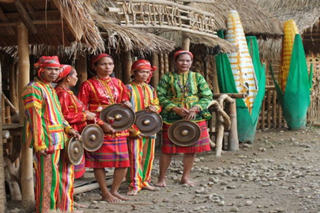

Communities of Upi
Upi, Maguindanao del Norte, is a vibrant town known for its cultural diversity. The community is made up of indigenous groups like the Teduray, the Maguindanaoan Muslim population, and settlers from various parts of the Philippines. These communities live together in harmony, contributing to the town’s unique identity and fostering an inclusive society.
History and Origin of the Teduray
The history of the Teduray is closely tied to the Maguindanao. According to legend, the two groups descended from brothers, Mamalu and Tabunaway. When Sharif Kabungsuan arrived to teach Islam, Tabunaway embraced the faith, while Mamalu stayed true to his traditional ways. This separation occurred around 1300 AD, with Mamalu leading the Teduray and Dulangan Manobo to the mountains, and Tabunaway leading the Maguindanao to the lowlands.
The Teduray engaged in trade with the Maguindanao, exchanging forest products like tobacco, beeswax, and rattan for clothing, iron tools, and salt. The Teduray were isolated from Spanish influence until the late 19th century when Catholicism was introduced. During American colonization, roads and schools were built in Upi, leading some Teduray to adopt plow farming and Christianity, while others retreated deeper into the mountains.
Today, the Teduray are split between those who have integrated with lowland society, practicing sedentary agriculture, and those who maintain their traditional lifestyle in the mountains. The Teduray still face challenges due to economic interests like logging and land disputes.
Land and Worldview
The Teduray’s concept of land is rooted in the idea of "gefe" or use rights. Land used for swidden (slash-and-burn) farming belongs to the person until the harvest. Afterward, the land returns to communal use. This contrasts with modern land ownership systems, which have disrupted their traditional practices.
Genealogy and Subgroups
The Teduray trace their ancestry to Mamalu and occupy areas around the Cotabato Cordillera. They divide themselves into subgroups based on geography: the river people, coastal people, and mountain people. They share cultural and genealogical links with the Dulangan Manobo and Lambangian tribes.
Myth and Beliefs
In Teduray mythology, Minaden, a female deity, created the world and humans from mud. The world is believed to have eight layers, with her brother Tulus (also known as Sualla) residing in the topmost layer. Their creation myth highlights the importance of nature and their connection to the land.
The Teduray remain a vital community in Upi, preserving their identity while navigating the changes brought by modernity and external influences.
Teduray Community
There are coastal, river, and mountain Teduray clans, each of which has variations in dialect. In fact, Teduray is a combination of tedu (“place of origin, birth, or residence”) and ray (from daya, meaning “upper part of a stream or river”). Their language, another distinct ethnolinguistic group, is structurally related to those of the Malayo-Polynesian family but is unintelligible even to their immediate neighbors. The majority of Teduray habitations are in Upi, South Upi, Dinaig, and Ampatuan in Maguindanao (ARMM), plus scattered populations in Sultan Kudarat and North Cotabato (SOCCSKSARGEN Region).
The primary source of income for coastal Tedurays is farming, hunting, fishing, and basket weaving; those living in the mountains engage in dry field agriculture, supplemented by hunting and the gathering of forest products. Tedurays are famous for their craftsmanship in weaving baskets with two-toned geometric designs. While many have adopted the cultures of neighboring Muslims and Christians people, a high percentage of their population still believe and practice their indigenous customs and rituals.
Maguindanaoan Muslim Community
The Maguindanaoan Muslim community in Upi is deeply rooted in Islamic traditions and practices. They contribute to the spiritual and cultural fabric of Upi, with mosques playing a central role in their daily lives. This community is also known for their music, dances, and craftsmanship, particularly in brassware and pottery.
Important People
Si Lagëy Lengkuos ang umakyat sa langit kasama ang kanyang mga tagasunod na hindi kinailangan mamatay muna sila, tinatawag na DIYAT. Pagkatapos ni Lagëy Lengkuos na umakyag sa langit dala ang kanilang katawan ay wala ng sumunod pa. Si Lagëy Firis, ay hindi na naka-diyat bagamat banal din siya. Maaring namatay din at dinala ang kaluluwa sa langit. Si Lagëy Sëbotën naman ay bigla lang hindi nakita at pinaniniwalaang dito lang sa mundong ito ngunit hindi na makita ng mga keilawan dahil may nakapagitan na dilim sa Kanya at mga keilawan. Ito ay tinatawag na SËNIRUNG. Marami pang banal naTëduray at Lambangian na umakyat sa langit ang kaluluwa at kasama ang Panginpon. Maraming pang binanggit sa Bëninarëw na mga banal dahil nagtiis at naghirap alang-alang sa kapakanan ng kapwa këilawan. Ang mga taong ito ay mga binigyan ng grasya (gift) of God. Ang pinakahuli ay si Sarhento Mow I. Si Sarhento Mow naman ay isang Konstabularya ng United States ngunit nag-Absent Without Offiicial Leave (AWOL) dahil sa protesta nya at pinoprotektahan ang teritoryo, kultura, sistema at practices laban sa diskriminasyon, opresyon at panunupil ng pamahalaang Amerikano. Pagkatapos ay inaresto siya at dinala sa isang Isla sa bahagi ng Zamboanga, tinatawag na San Ramon. Simula noon ay wala ng balita sa kanya. Pati ang mga sundalo ng Amerkano ay hindi alam kung saan pumunta. Sila yong mga nagtiis maghirap sa pagmamahal nila sa kapwa tao pagkatapos kina-awaan sila ng Diyos dahil sinusunod nila ang utos ng Diyos kaya sinusunod sila ng maraming tao (keilawan), hanggang ngayon sinusunod pa rin ang kanilang mga yapak at gawi ng mga Tëduray at Lambangian na kumilala at nagmamahal sa kultura at tradisyun. Ang buhay at sistena ng pananampalataya ni Lagëy Lengkuos ay maririning sa "Bëninarëw" o "Bërinarëw" (Epiko) na hindi nakasulat. Hanggang isang Linggo, araw at gabi ito ikukuwento na inaawit ng mga binigyan ng kaalaman at dunong ng Panginoon upang isalaysay sa pamamagitan ng "linggëng" kung kumplètuhin. Ang Bëninarëw ay Banal na kwento na lsinalaysay ng paawit
Unity in Diversity
The people of Upi take pride in their harmonious co-existence, despite their cultural differences. This unity in diversity is celebrated through festivals, community events, and everyday life, making Upi a beacon of peace and mutual respect. Efforts to promote understanding between the Teduray, Maguindanaoans, and settlers continue to strengthen the town’s social fabric, ensuring lasting peace and progress for future generations.